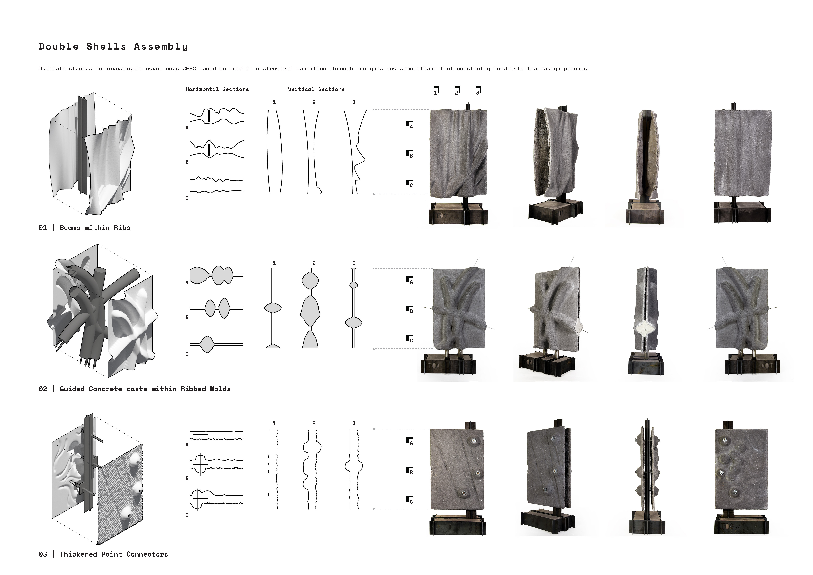
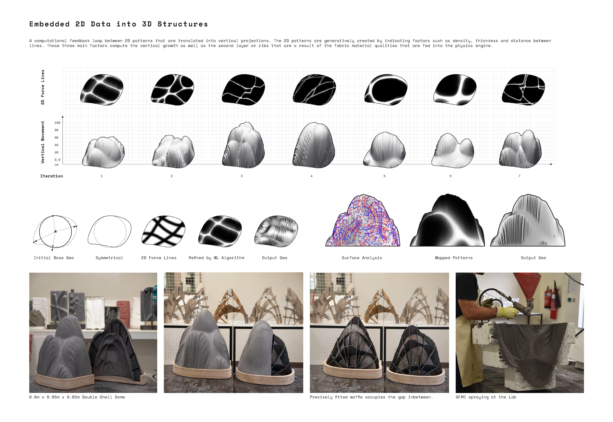
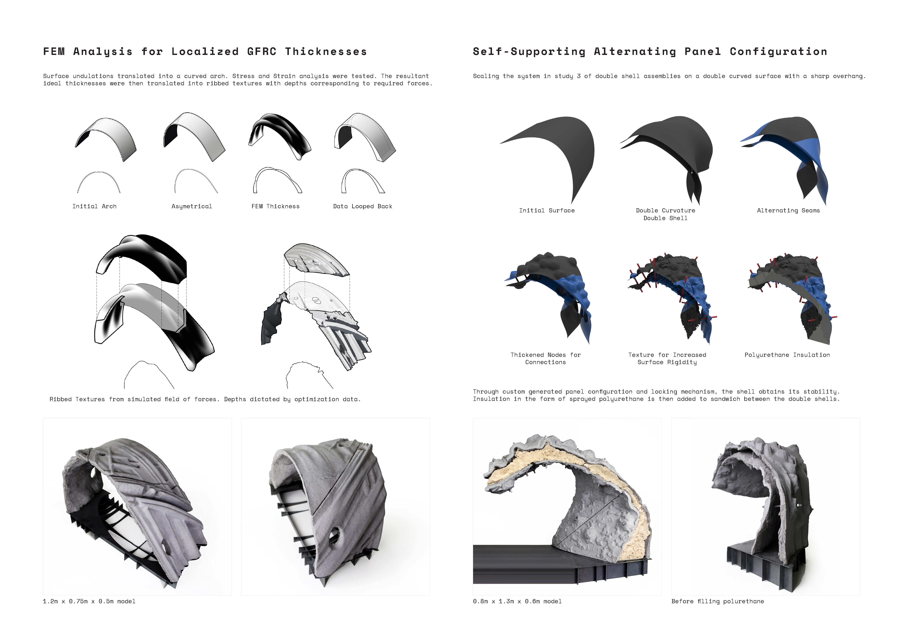
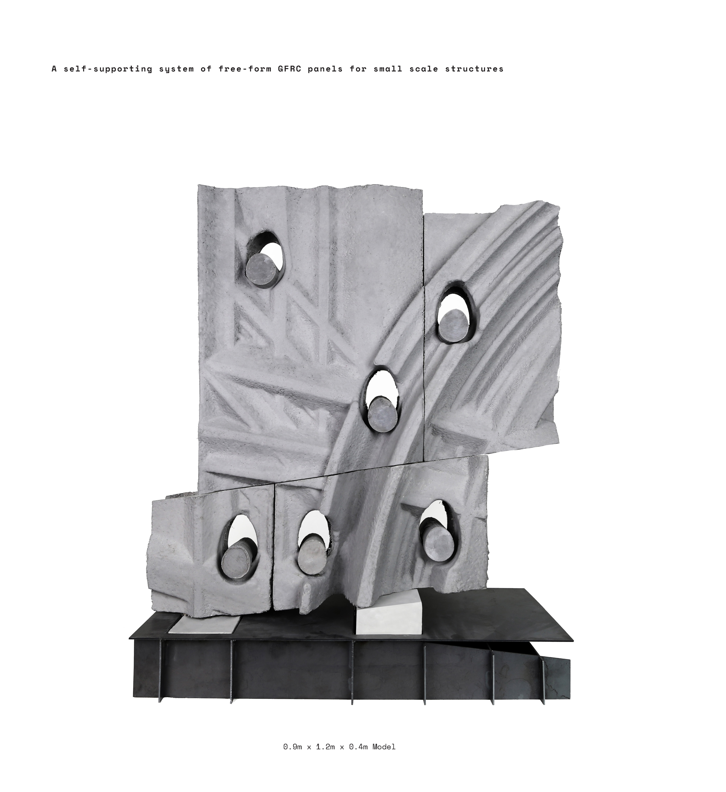
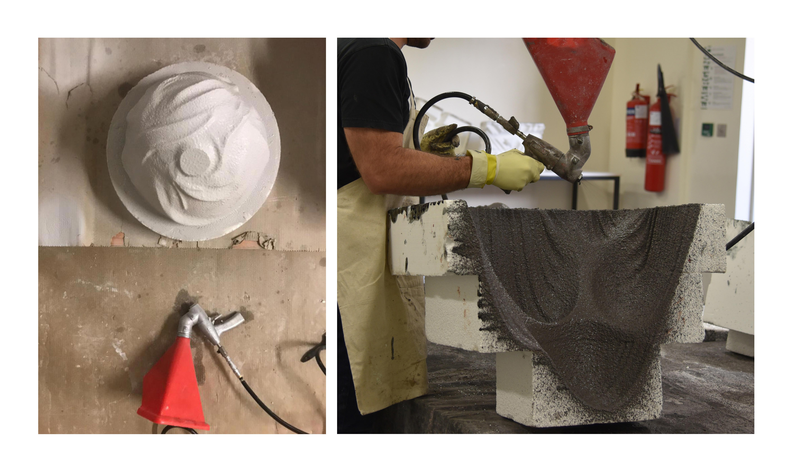
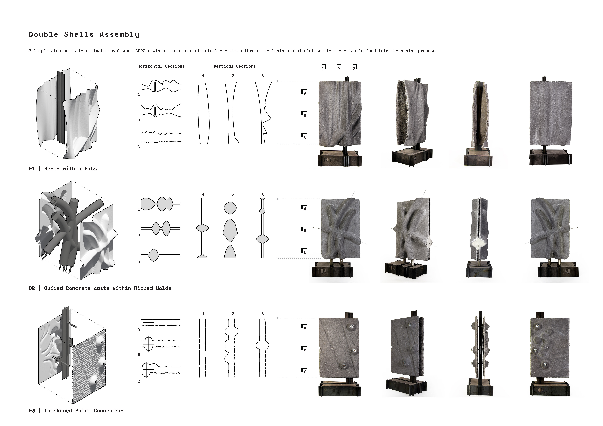
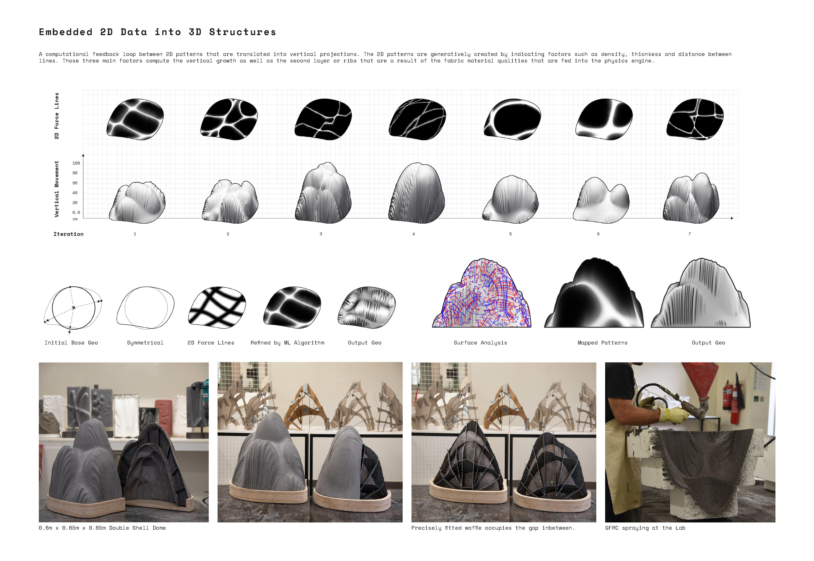
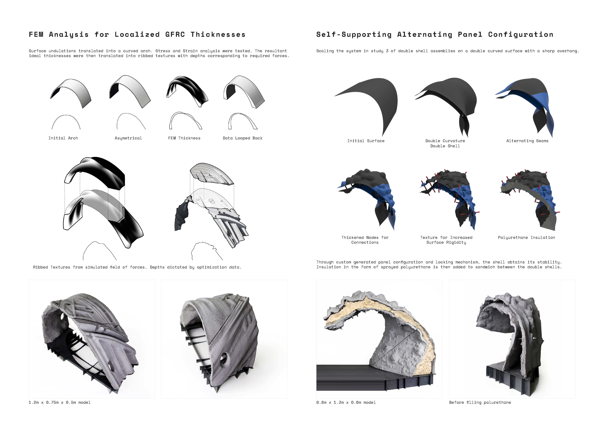
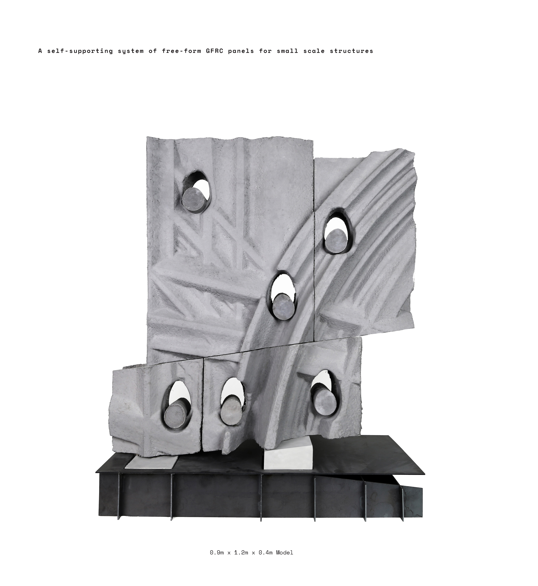
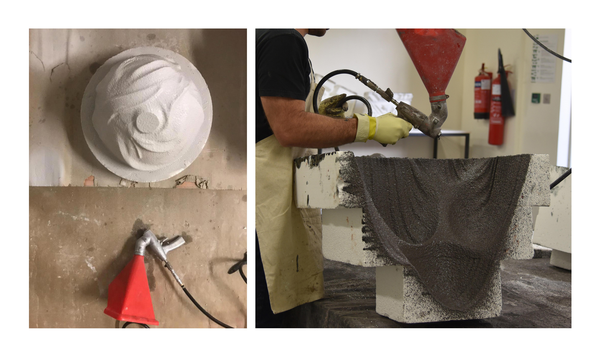

· coded space ·
College of Architecture, Art & Design,
American University of Sharjah, UAE
Advisor: Professor Ammar Kalo
Paradigm shifts in architectural expression have always come hand in hand with technological and manufacturing advances, and material innovations have often defined entire periods of architecture design. Glass fiber reinforced concrete is (GFRC) is one of those materials that have garnered wider use in the last few decades since the material is a light weight alternative to concrete, easier to assemble on site, and allows for more complex form-making. Conventionally GFRC has been used in facade panels which require a substructure to hang or bolt the panels on. However recent advances in GFRC production have allowed designers and builders to deploy the lightweight material in novel ways. Some of these application include building a diagrid structure using thin GFRC beams 1, and constructing a 10 meters tall hyperbolic thin shell pavilion.
However, while these projects demonstrated the feasibility of thin single shell self-supporting structures using GFRC, they also relied heavily on the structural qualities of concave geometries. Achieving stable GFRC structures with free-form or double curved surfaces increase complexities and requires the introduction of a second shell.
The goal of this research is to demonstrate a self-supporting system of free-form GFRC panels for small scale structures. This paper is structured in three parts: 1) examining recent developments in GFRC fabrication as well as providing background to the research, 2) exploration of studies done for this research and proposed system, and 3) Discussing outcomes, in addition to the systems’ capabilities, novelty, and limitations. Having a double shell allows the structure to dramatically change in overall thickness and footprint for structural stability, which is something a single shell cannot accommodate. In section, the distance between the panels varies depending on the structural needs, as well as varying local panel thickness changes where needed for steel connectors.
Many studies of performative ribbed textures, panel configurations and connection strategies were developed over the course of the research. The initial studies focused on domed shells, before transitioning to a paneled free-form system. The ribbed surfaces provide local stiffness in the panel, but are also loosely based on a stress diagram of the global structure. In addition, these ribs act as indexing features, making it easier to assemble the panels. The panels are staggered between the inner and outer shell in section. This allows for connections from one panel to attach to two panels behind it instead of one, which results in a more stable interconnected structure. Since the panels rely on one another instead of an internal structure, the assembly process starts with the bottom row of panels and move up, with temporary scaffolding required in some areas.
After erecting the double shell, expandable polyurethane foam is sprayed into the cavity between the panels to provide shear stability and transfer loads more efficient between the shells, which was also a recommendation made by a recent study into advanced GFRC manufacturing of complex geometry. Research described in this paper was also done in collaboration with an industry partner, with whom previous studies on highly textured GFRC panels were completed, as a continuation of a research in novel uses and means of production of GFRC. All the work done so far is at half scale to prove feasibility. The work is currently focused on producing a mockup section to test the panels and the system at full scale which will be ready in September 2019, as well as refining connection points and maintaining consistent overall panel thicknesses. In addition, some of the limitations of the system are geometries with small curvature radii and large overhangs.
 








